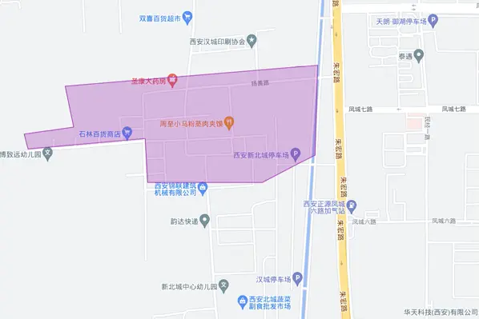

点击左上角三条杠查看/隐藏目录😎
1.1.1. 扬善寨
36.5公顷
在这里的记录比较详尽，直接原文照搬了：
- 第一份记录：
在长安大学渭水校区以南，北郊立交桥附近，有连片的城中村。3号下午，调研小组对该片城中村的“扬善寨”进行了初步摸排。 扬善寨的主街是一条相当繁华的商业街，有浓厚的县城风，但是除了蜜雪冰城之外，其主要营业的店铺和西安主城区具有明显的差别，大多是一些不太出名甚至主要是在该地区经营的个体工商户。调研小组在一家名为“罗氏食品”的店铺购买了一些甜品，甜品质量尚可（）。
主街整体上看起来相当繁华，在调研小组离开扬善寨的晚上，依然能看见大批操着外地口音的工人往村子里涌入，河南、四川、重庆特色的菜馆与路边流动摊位相当多，而村子里大多是饸饹面或者辣条扯面为代表的陕西面食。当然，我国北方地区人口基本可以习惯陕西地区食品。但是主街在晚上的繁华以及此前的菜馆应当可以做出一些判断，即扬善寨居住着数量极为庞大的外来务工群体，并且主要来自于河南、四川。 我们在村子里的调研基本印证了这个猜想。
大多数的楼房是无房可对外出租的状态。以至于我们走到一间房前查看门口所贴的公示信息栏时，旁边坐着的老奶奶甚至直接说“没有房了，早租完了。”这样的话。而另一个接受采访的房东则直接说明自己家里长租客就很多，没有房子可以对外出租。这与小寨村等在南部的城中村完全不同。 扬善寨地区的城中村建筑相较于小寨村更为规范，主要体现在违建建筑相对较少。这可能归功于 “较为严格和系统化” 的管理模式。扬善寨每一处自建屋全部具有可单独识别的二维码，对外出租的房屋在门口会有租房信息公示栏。但是这些租房信息公示栏一般是空着的，也就是说它大概率也没有发挥它应该有的作用。同时这也说明了租房问题已经是一个引起当地政府和居委会（或者村委会）的问题，这也从侧面说明了扬善寨的外来人口之多。
与扬善寨这个名字形成极为滑稽的或者讽刺的对比的是扬善寨里发达的色情与赌博产业。从餐饮价格来看，一大份饸饹面11元，一些扯面只要8元的价格充分说明了当地消费水平的真实情况，可是就是在这样一个村子，仅仅一条街，就有十几家足疗店，并且只有一两个店员，身着十分暴露的衣服，穿丝袜，化妆，并不是足疗店的制服，甚至有穿jk的女性在向路人招手。我们下午前去的时候还是关门的店晚上就亮起昏暗的灯。这不需要有任何的怀疑，就是情色场所。而路上随处可见的成人用品店里一些产品的销量更证明了这个地区人口的性生活的丰富。可是我们同时发现避孕套等避孕产品销售量远远不如延时等产品。这有两种可能，第一是当地避孕意识或者性健康意识相对薄弱，如果是这种可能，那么堕胎率或许会比城区内要略高，同时这里的人口承担着较大的性疾病的风险。第二种可能是妓女本身提供避孕套或者自行有节育措施。两种可能同时存在，目前不能确认。但是这并不奇怪，因为如果这里本身就是外来务工人口较多，这些反而变得合理起来。有药店明确张贴“不出售终止妊娠过程药品”的提示，可以得知当地意外怀孕率估计并不低。
黄赌毒一般是同时存在的。在一条街的末尾有一家没有挂牌子的棋牌室，里面有一些人坐在一张桌子前紧张的翻牌，门口椅子上坐着一个四处张望的中年人。我们猜测里面正在进行赌博活动，这个男子应该是在望风。
补充：一位房东提到，该城中村大概在近10年才繁华起来，也就是说，西安的城市扩张刚刚到达这里不久。
- 第二份记录：
西扬善村及其周边：
- 餐饮，按摩，修脚，服装等服务劳动者的行业较多，色情产业和情趣用品业尤其发达
- 工厂分布在草滩，一路，二路，三路等地方，一共八路。这边的年轻人一般来说都在工厂里打正式工，年老的人去劳务市场打散工。在草滩，1~8路有许多工厂包括印刷厂与包装厂等。
- 最近的劳务市场在汉城商业街，打工的年轻人，男女都有。
- 与典型城中村类似，缺乏公共服务设施，燃气管线有隐患，垃圾缺乏处理。
- 出租屋普遍月租为200-400元每月，主要取决于房屋位置是否偏僻，是否带卫生间和是否有窗也会影响。通常2-3月起租，旅店30一晚。水电通常10元/月。燃气管道和电线裸露，架设高度低，疑似有安全隐患。不完全统计显示空房率约在30%-50%左右。
- 实地探访发现这里的卫生所虽然正常运转，但医生水平不高且备药不多。
- 周边：向南至南玉丰村，有一个大型农贸交易市场。此处人口密度明显降低下来。向西约1.5-2km至楼台阁一带，已经失去城中村特征成为典型乡村。我们认为西侧和南侧已经没有突出的调查价值。
